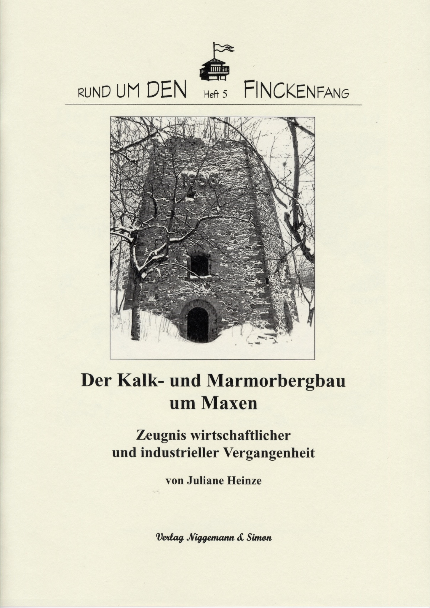

Rund um den Finckenfang · Heft 5
Der Kalk- und Marmorbergbau um Maxen. Zeugnis wirtschaftlicher und industrieller Vergangenheit
Juliane Heinze
Maxen 2004 · 44 Seiten · 35 Abbildungen und 4 Farbseiten
ISBN 3-9808477-4-8
7,90 €
Zurzeit nicht lieferbar
Zum Inhalt
Wer kennt die Zeugnisse industrieller Vorgeschichte in und um Maxen? Brennöfen und verlassene Kalkbrüche? Die vorliegende Arbeit hat sich zum Ziel gesetzt, die Kalk- und Marmorwirtschaft historisch und wirtschaftlich zu untersuchen, vollzogene Entwicklungen transparenter zu machen und Bezüge zu anderen regionalen Ereignissen herzustellen.